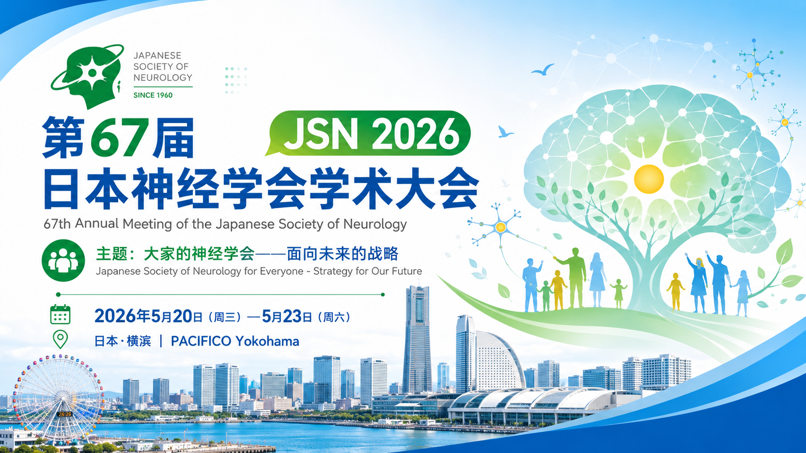

作者：赵重波&Hermes / 2026年07月02日 / JSN 2026
NEURO 2026重症肌无力研究全景解读：分子靶向治疗时代的治疗新格局
本文根据 NEURO 2026（第67届日本神经学会学术大会，2026年5月20日至23日，日本横滨 PACIFICO Yokohama）大会摘要整理，聚焦 MG 专题研讨会、口头报告、海报展示和讲座马拉松中的核心研究信号。

Key Takeaways
值得优先关注的 5 个信号
NEURO 2026 MG 内容覆盖专题研讨会、口头报告、海报展示和讲座马拉松，形成较完整的日本本土研究图谱。
胸腺、T 细胞、B 细胞、浆细胞和病原性自身抗体被放在同一框架中讨论，为上游干预提供线索。
补体拮抗剂、FcRn 拮抗剂、CD19/B 细胞靶向、CAR-T 与 BAFF/BTK 等方向共同构成治疗新格局。
日本注册、理赔数据库和单中心队列持续回答激素减量、感染、骨折、医疗资源利用和联合治疗问题。
MM-5mg 目标、PRO 工具、治疗反应预测标志物和并发症风险分层，是未来实践转化的关键抓手。
资料来源与证据属性
资料来源：NEURO 2026 / 第67届日本神经学会学术大会公开摘要与会议整理稿。
会议时间与地点：2026年5月20日至23日，日本横滨 PACIFICO Yokohama。本文归入“会议资讯 / 会议撷英”，用于学术情报跟踪和研究进展梳理。
引言
2026年5月21日至23日，日本神经学会第67届年会（NEURO 2026）在横滨太平洋会议中心隆重召开。作为亚洲最具影响力的神经病学学术盛会之一，本届大会的重症肌无力（Myasthenia Gravis, MG）专题内容异常丰富——涵盖专题研讨会（Symposium 19）、口头报告（Oral Session 22、30、42）、海报展示（Poster Session 038、043、044、071、080、092）以及讲座马拉松（Lecture Marathon）等多个板块，共收录了30余篇与MG直接相关的学术摘要。本文对这些研究进行了系统梳理，从病态机制、治疗策略、真实世界证据、安全性考量等多个维度，为您全景呈现MG领域在2026年的最新研究进展。
一、专题研讨会：MG治疗战略背后的病态机制深度解析
1.1 胸腺病理与胸腺摘除术的免疫学意义
专题研讨会S-19由铃木重明（东京都立神经病院）和鹈泽显之（千叶大学）主持，四位讲者从不同维度深入解读了MG的病态机制。奥村明之进（登美丘康复医院）系统阐述了胸腺在MG发病中的核心作用。根据厚生省免疫性神经疾患研究班的报告，MG患者合并胸腺过形成或胸腺肿等胸腺病理异常的比例高达80.9%。尤其在抗AChR抗体阳性的早发型MG（EOMG）患者中，胸腺髓质呈现滤泡增生并含有大量生发中心——这些生发中心是高亲和力抗体产生细胞阳性选择的场所，抗原提呈细胞将AChR提呈给T细胞后，通过T细胞激活进而活化B细胞。值得注意的是，重症肌无力症患者胸内生发中心B细胞的Bcl2分子表达高于扁桃来源的B细胞，提示阴性选择导致的清除可能不易发生。胸腺摘除后血清抗AChR抗体价缓慢下降，MG症状的改善需要以年为单位的时间，这提示AChR抗体的产生不仅局限于胸腺，外周淋巴组织也在持续进行。因此，胸腺摘除的意义在于去除胸腺内高亲和力AChR抗体产生B细胞的分化成熟场所。奥村教授还特别指出，胸腺肿的肿瘤上皮细胞具有将骨髓来源的T细胞前驱细胞分化诱导为CD4+CD8+双阳性T细胞的能力，胸腺肿可视为一种免疫学功能性肿瘤。然而，胸腺肿的肿瘤上皮细胞不表达Aire，可能缺乏对自身抗原的阴性选择功能，这可能是自身免疫疾病发病的原因。没有MG症状的胸腺肿病例中约25%为AChR抗体阳性，因此胸腺肿切除后的MG发病仍需引起注意。
1.2 T细胞在MG病态中的核心地位
枪泽公明（综合花卷病院）从T细胞角度深入分析了MG的病态机制。MG主要通过骨骼肌神经肌肉接头处的乙酰胆碱受体抗体（AChR抗体）介导，导致神经肌肉传递障碍的自身免疫疾病。目前全身型MG的靶向药物包括抗补体药物（阻止AChR抗体介导的补体依赖性后膜破坏）和FcRn拮抗剂（通过抑制再循环降低血中IgG浓度）。这些药物虽然速效，但作用于病态下游，因此对于效果显著的病例，停药或减量都较为困难，且偶尔也有效果不充分的情况。今后，作用于病态上游的靶向药物与现有药物的联合或切换预计将成为讨论的焦点。枪泽教授指出，早在1980年代就已开始分析AChR特异性T细胞。早期发病型MG增生胸腺来源的T细胞分馏与同一患者的外周血淋巴细胞共培养后，外周血淋巴细胞的AChR抗体产生能力显著增强。这种增强作用仅见于AChR抗体产生，总IgG产量不增加，且该作用依赖于AChR抗原和AChR特异性辅助T细胞，具有HLA-DR限制性。B细胞的AChR抗体产生依赖于特异性T细胞。然而，AChR特异性T细胞在健康人中也可能存在。MG与健康人的重要区别在于AChR特异性T细胞维持活化状态——MG患者的外周血淋巴细胞即使在不施加抗原刺激的情况下，在体外也能显示出一定程度的AChR抗体产生能力。MG的发病涉及两个关键环节：胸腺内分化过程中AChR特异性T细胞的逸脱和发生，以及随后发生的持续性抗原（AChR）特异性T细胞活化（胸腺内或胸腺外）。后者是发病和疾病持续的触发因素和促进因素，作为治疗靶点尤为重要。然而，以阻止T细胞活化为目的的靶向药物（IL-17或其受体、CD80/CD86、CD40等）的开发近期似乎进展有限。枪泽教授特别强调，在病态早期依赖于T细胞的AChR抗体产生B细胞，随着病态的持续会分化为浆细胞并失去T细胞依赖性，表现出药物抗性。分化成熟的AChR抗体产生细胞被认为是MG难治化和T细胞抑制效果不充分的背景因素。最近的MG治疗开发以B细胞系为靶点的药物较多，期待这些药物能取得成果并增加缓解率。
1.3 B细胞与浆细胞：靶向治疗的核心靶点
村井弘之（国际医疗福祉大学）聚焦于B细胞和浆细胞在MG中的作用。MG的基本病态可简述为：T细胞依赖性出现的B细胞成熟为浆细胞，后者产生针对运动终板上的AChR或MuSK等分子的病原性自身抗体。初始B细胞识别抗原并接受辅助T细胞刺激后，在生发中心分化为记忆B细胞和浆母细胞。浆母细胞具有抗体产生能力但寿命短，而进一步分化的长寿浆细胞存在于骨髓等处，能长期持续产生抗体。村井教授详细解释了B细胞表面抗原CD19和CD20的表达谱差异：CD20从前B细胞到记忆B细胞均有表达，但在浆母细胞和浆细胞中不表达；CD19的表达范围更广，从前B细胞到浆母细胞均有表达，部分浆细胞也有表达，但随着分化进展表达会消失。因此，以CD20为靶点的利妥昔单抗（Rituximab）无法去除不表达CD20的浆母细胞，但在MuSK抗体阳性MG中特别有用。而以CD19为靶点的伊奈利珠单抗（Inebilizumab）不仅能耗竭B细胞，还能耗竭浆母细胞——MINT试验已证明其对MG的有效性。其他涉及B细胞功能的治疗还包括IL-6拮抗剂、BTK拮抗剂、BAFF拮抗剂和CD19 CAR-T治疗等。
1.4 病原性自身抗体与神经肌肉接头病理
本村政胜（长崎综合科学大学）从分子病理角度阐述了MG的发病机制。MG的病原性自身抗体主要有两种：约85%为AChR抗体，属于IgG1亚型，结合神经肌肉接头的AChR后引发补体依赖性膜破坏，并促进受体内存化，通过这两种机制减少受体数量，显著降低神经肌肉接头的信号传递。约5%（日本约3%）为MuSK抗体，主要属于IgG4亚型，在血液中可发生Fab-arm交换，是一种特殊的IgG，不引起补体依赖性膜破坏。在AChR抗体阳性MG中，自身抗体与受体结合后激活补体，形成膜攻击复合物（MAC），最终导致细胞膜破坏。这种补体介导的膜破坏会引起突触间隙扩大、突触后膜平坦化等病理变化，进一步减少AChR和MuSK蛋白，导致乙酰胆碱效应降低，从而产生肌无力和易疲劳性。而MuSK抗体阳性MG的神经肌肉接头病理报告较少，2005年Shiraishi等人的报告显示，大多数MuSK-MG没有补体介导的膜破坏，神经肌肉接头结构基本保持。
二、口头报告：从真实世界数据到新型药物临床试验
2.1 胸腺摘除与癌症风险的再评估（O-22-1）
赤岭博行（琉球大学病院）等利用日本MG注册数据（2021年）对胸腺摘除与癌症发病风险的关系进行了评估。该研究分析了13家医疗设施注册的1,710例数据，排除合并胸腺肿的MG患者、缺失数据和观察期不足1年的患者后，最终纳入1,159名（胸腺摘除组293名，非摘除组866名）进行分析。结果显示，粗癌症发生率在胸腺摘除组（26/293，8.9%）显著高于非摘除组（46/866，5.3%），但在Cox比例风险回归分析中，调整性别、吸烟史、泼尼松龙使用期间和钙调磷酸酶拮抗剂使用后，胸腺摘除与癌症风险无显著相关性（HR 1.34，95% CI: 0.81-2.22，p=0.253）。该研究为胸腺摘除的安全性提供了重要的真实世界证据——在调整混杂因素后，胸腺摘除与癌症增加无独立相关性。
2.2 糖皮质激素脉冲治疗的初期恶化风险因子（O-22-2）
林俊行（日本医科大学附属病院）对MG患者接受糖皮质激素脉冲治疗后的初期恶化进行了多中心回顾性研究。研究纳入了2012年至2025年间6家设施入院的174例接受脉冲治疗的MG患者（平均年龄66岁，男性51%），初期恶化的定义为脉冲后1周内QMG评分恶化1分以上。结果显示，初期恶化发生率为13%（23/174），初期恶化组的反复神经刺激试验阳性率显著高于非恶化组（81% vs 49%，p=0.02）。在全身型MG（104人）的亚组分析中，初期恶化组治疗前QMG评分显著更高（16分 vs 11分，p=0.02），脉冲前未先行IVIg或血浆置换的比例更高（44% vs 17%，p=0.02）。多变量分析显示，治疗前QMG评分（OR 1.2，95% CI 1.07-1.40）和脉冲前的IVIg/血浆置换先行（OR 0.13，95% CI 0.02-0.63）与初期恶化独立相关。该研究提示，对于重症患者，先行IVIg或血浆置换可有效减少初期恶化。
2.3 迟发型MG中口服糖皮质激素剂量与脆性骨折的关联（O-22-3）
寒川真（近畿大学）利用日本后期高龄者医疗系统（LSEHS）理赔数据库（2014-2021年），分析了迟发型MG患者口服糖皮质激素（OCS）剂量与脆性骨折风险的关联。研究纳入148例符合条件的患者，平均初始OCS剂量为11.1±17.5 mg/天，平均最大剂量为21.1±29.3 mg/天。结果显示，与低剂量组（≤5 mg/天）相比，>5-20 mg/天组的脆性骨折风险比（HR）为1.50，>20 mg/天组的HR为4.20（均p<0.001）。该研究明确揭示了迟发型MG患者OCS暴露量与脆性骨折风险之间的剂量依赖关系，强调了在迟发型MG患者中最小化OCS使用和优先关注骨骼健康管理的重要性。
2.4 AChR抗体价变动与疾病活动度的关联（O-22-4）
寺井淳（国立病院机构灾害医疗中心）对24例AChR抗体阳性MG患者（女性16例，随访期间1998-2025年）进行了回顾性观察研究。13例（54.2%）在病程中出现症状复发。复发组中，复发时AChR抗体价升高的病例显著多于非复发组（62% vs 0%，p=0.02）。此外，合并胸腺肿在复发组中显著更多（62% vs 10%，p=0.013）。在复发组内部，抗体价变动组（8/13，61.5%）的复发次数显著多于非变动组（平均3.4次 vs 1.2次，p=0.032）。该研究提示，在MG患者中，抗体价变动的病例更容易出现疾病活动度变化，监测抗体价推移具有重要临床意义。
2.5 Triple M重叠综合征的共同免疫发病机制（O-30-2）
羽尾晓人（东京都立神经病院）对ICI相关和胸腺肿相关的Triple M（肌无力、肌炎、心肌炎）重叠综合征进行了蛋白质组学分析。研究纳入16例Triple M患者（ICI组8例，胸腺肿组8例），使用Olink Explore HT Panel检测血清蛋白。结果显示，两组患者的5,417种蛋白表达水平相似。与仅有肌无力的胸腺肿患者相比，Triple M两组共同上调了244种蛋白。基因本体和通路富集分析表明，Triple M组中肿瘤坏死因子（TNF）细胞因子信号通路上调。该研究证实了ICI诱导和胸腺肿相关的Triple M具有共同的免疫发病通路，针对TNF信号通路的生物制剂可能是有前景的治疗药物。
2.6 讲座马拉松：MG诊疗的最前线（LM-10-1）
长根百合子（综合花卷病院）在讲座马拉松中系统综述了MG治疗的现状与挑战。日本诊疗指南将"口服泼尼松龙5mg/天以下的minimal manifestations水平（MM-5mg）"定为治疗目标，但2021年的Japan MG Registry调查显示，MM-5mg达成率在整个MG群体（包括眼肌型）中仅维持在50%左右。目前全身型MG的靶向药物已有补体拮抗剂和FcRn拮抗剂两大类。补体拮抗剂方面，从2017年批准的依库珠单抗静脉注射，到长效制剂拉夫利珠单抗，再到可在家自我注射的泽卢克布仑钠皮下注射，补体拮抗剂的给药方式不断进化。FcRn拮抗剂方面，从2022年批准的艾加莫德静脉注射，到罗泽利昔珠单抗抗皮下注射、艾加莫德皮下注射，再到2025年医保收录的尼卡利单抗静脉注射，FcRn拮抗剂也已实现居家自我注射。长根教授指出，靶向药物使MG患者能够根据生活方式和治疗环境进行选择，但对于靶向药物效果不充分的患者，仍需寻找预测治疗反应的生物标志物。
三、海报专题：真实世界数据与治疗策略优化
3.1 过去10年MG患者背景与治疗趋势的变化（Pj-043-5）
津川润（福冈大学病院）对比了2015年（89例）和2025年（103例）的MG患者数据。2025年组中胸腺摘除率降低、发病年龄年轻化、每日PSL剂量显著减少。在10年可追踪的36例中，静脉速效治疗（FT）实施率下降、每日PSL剂量减少，4例引入了生物制剂。2025年组MM-5mg达成率为78.1%（p=0.037），但完全停用激素的比例仅为12.5%。该研究证实了过去10年间治疗方针已沿指南修订方向转变，但重症度（MG-ADL）改善有限，今后需要包括生物制剂在内的治疗策略优化。
3.2 即效性治疗的感染风险（Pj-043-4）
山本せり夏（日本医科大学千叶北总病院）对5家设施358次FT治疗的感染风险进行了回顾性分析。结果显示，感染合并率为5.3%（19/358），其中0.8%（3例）因感染死亡。感染类型以呼吸道感染为主（3.9%）。多变量分析显示，QMG评分（OR 22.1）、血液净化疗法（OR 4.31）和人工呼吸器使用（OR 37.1）是感染的独立危险因素。该研究提示，重症MG患者在接受FT时需特别关注感染风险，尤其是血液净化疗法和高QMG评分患者。
3.3 MM-5mg未达成病例的特征分析（Pj-043-3）
渡边晋平（昭和医科大学）对98例MG患者中37例（37.8%）MM-5mg未达成者进行了分析。其中，MG-ADL>1组（non-ADL）占56.8%，PSL>5mg组（non-PSL）占43.2%。non-PSL组中分子靶向药物的引入率显著高于non-ADL组（p=0.01），non-PSL组中因合并症无法减少PSL的患者占68.8%。该研究提示，MM-5mg并非对所有患者都是最重要的目标，应根据个体情况选择治疗方案。
3.4 MG症状PRO评估工具的开发（Pj-043-6）
小松铁平（东京慈惠会医科大学）对新开发的MG symptoms PRO评估工具与现有MG-ADL和MG-QOL15r的比较研究发现，MG symptoms PRO的肌无力疲劳与MG-ADL（r=0.75）和MG-QOL15r（r=0.70）有强相关，但身体疲劳、球肌无力、眼肌无力的相关性较低，呼吸肌无力与两者均无显著相关。该研究提示MG symptoms PRO可作为现有PRO工具的有益补充。
3.5 MG患者骨折高危人群的层别分析（Pj-043-7）
内孝文（东邦大学医疗中心大桥病院）对FRAX高风险层中的29例MG患者进行了年龄×ADL四分法分析。结果显示，低年龄/ADL不良组（LH组）的骨折率最高（57.1%），显著高于高年龄/ADL不良组（25.0%）和低年龄/ADL良好组（11.1%）。该研究提示，MG患者的骨折预防不仅需要FRAX评估，还应结合疾病重症度和ADL评估，特别关注ADL下降组的原病改善和跌倒预防。
3.6 泽卢克布仑钠（Zilucoplan）在难治性MG中的临床应用（Pj-044-2）
大桥智仁（奈良县立医科大学附属病院）对6例引入泽卢克布仑钠的MG患者进行了回顾性分析。全例均为胸腺肿相关MG，MGFA分类最重症时均为Class III以上。引入8周后，MG-ADL/QMG变化量分别为-3和-7。1例可减少泼尼松龙至5mg/天，2例可减少免疫抑制剂。值得注意的是，泽卢克布仑钠为肽制剂，可与IVIg联合使用，为治疗中的MG恶化提供了新的应对策略。
3.7 C5拮抗剂与FcRn拮抗剂的联合治疗（Pj-044-3）
入江研一（久留米大学）报道了2例难治性胸腺肿相关MG患者使用C5拮抗剂与FcRn拮抗剂联合治疗的经验。50代女性病例在胸腺摘除后反复出现AChR抗体价升高和症状加重，联合治疗后MG-ADL从19降至6。70代女性病例在标准治疗效果不佳后，先引入FcRn拮抗剂效果有限，追加C5拮抗剂并施行胸腺摘除术后，MG-ADL改善至4。该研究提示，对于标准治疗抵抗的病例，早期引入分子靶向药物或联合治疗可望获得良好的疾病控制。
3.8 Triple M重叠综合征中FcRn拮抗剂的应用（Pj-044-4）
池川真之（产业医科大学）对5例Triple M（肌无力、肌炎、心肌炎）重叠综合征患者使用FcRn拮抗剂的经验进行了分析。其中4例为irAE相关，1例为非irAE相关（SRP抗体阳性肌炎合并MG和心肌炎）。FcRn拮抗剂引入后QMG评分中位数从11分降至6分，改善率中位数为44%。5例中4例显示临床显著改善，1例因重症心肌炎死亡。该研究提示，FcRn拮抗剂在Triple M综合征中可较早改善MG症状，在合并肌炎或心肌炎导致IVIg或血浆置换难以实施的情况下，是有用的治疗选择。
3.9 艾加莫德对口服类固醇减量的效果（Pe-038-3）
铃木哲（筑波大学）开展了一项前瞻性单臂研究，评估艾加莫德规律给药对口服类固醇减量的效果。研究纳入9例gMG患者（需PSL≥6mg/天，MG-ADL≥5分），接受每周艾加莫德连续4周，共4个周期。分析集8例患者的基线PSL剂量为9.5±1.9mg/天，MG-ADL为7.5±1.8分。研究结束时PSL剂量显著减少了4.6±2.5mg（p=0.002）。但1例TAMG患者在PSL减量后症状恶化，提示减量效果可能受MG亚型影响。
3.10 EFT后早期引入FcRn拮抗剂的巩固治疗策略（Pe-038-2）
柳泽辉一（圣隶滨松医院）提出了在EFT（早期速效治疗）后及时引入FcRn拮抗剂作为"巩固治疗"的新策略。回顾性分析纳入38例gMG患者，即时组（8例）定义为EFT后60天内引入FcRn拮抗剂且病程≤2年。结果显示，即时组0/8例需转换治疗，延迟组15/30例需转换（log-rank p=0.02）。Firth惩罚Cox模型显示，即时引入与转换风险显著降低相关（HR 0.09，95% CI 0.001-0.70）。该研究提示，病程早期患者在EFT后及时引入FcRn拮抗剂可能支持更稳定的疾病控制。
3.11 DOK7型先天性肌无力综合征的ARGX-119试验（O-42-1）
渡边光法（argenx）报告了ARGX-119（人源化激动性单克隆抗体，特异性激活MuSK）在DOK7-CMS患者中的1b期临床试验结果。该研究是一项多中心、双盲、安慰剂对照研究（NCT06436742），评估了ARGX-119在成人DOK7-CMS患者中的安全性和有效性。参与者接受6次静脉注射，为期12周治疗期。结果显示ARGX-119耐受性良好，该药物有望成为首个针对先天性肌无力综合征的治疗选择。
3.12 戈鲁利单抗在gMG中的III期PREVAIL研究（O-42-2）
增田真之（东京医科大学）报告了新型双结合纳米抗体戈鲁利单抗的III期PREVAIL研究（NCT05556096）结果。260例AChR-Ab+ gMG患者随机分配至戈鲁利单抗组（n=131）或安慰剂组（n=129）。戈鲁利单抗每周皮下自我给药。26周时MG-ADL总评分变化的最小二乘均值（SEM）戈鲁利单抗组为-4.2（0.29），安慰剂组为-2.6（0.27），治疗差异-1.6（0.40），P<0.0001。QMG总评分变化戈鲁利单抗组为-4.5（0.37），安慰剂组为-2.4（0.34），治疗差异-2.1（0.50），P<0.0001。此外，戈鲁利单抗对眼肌症状也有显著改善（O-42-6）。
3.13 艾加莫德皮下注射的长期安全性与有效性（O-42-3）
枪泽公明（综合花卷病院）报告了ADAPT-SC+试验的最终结果。180例参与者（含16例日本患者）接受了≥1次艾加莫德皮下注射，平均研究持续2.6年，总随访459.4患者年。不良事件大多为轻中度，注射部位反应为非严重事件，未导致停药，且在后续周期中发生率降低。日本患者的安全性特征与总体人群一致。
3.14 泽卢克布仑钠日本患者120周分析（O-42-4）
村井弘之（国际医疗福祉大学）报告了RAISE-XT研究中日本患者的120周数据。16/200例日本患者入组RAISE-XT，120周时泽卢克布仑钠暴露中位时间为2.3年。120周时日本亚组（n=8）MG-ADL评分较基线平均变化为-7.00分，显示长期治疗可持续维持显著的临床改善。
3.15 艾加莫德真实世界血清学分型分析（O-42-5）
渡边充（九州大学病院）分析了469例使用艾加莫德静脉注射的真实世界数据。血清学分布为：AChR抗体阳性57.1%（268例），MuSK抗体阳性13.4%（63例），双血清阴性29.4%（138例）。总体药物不良反应和严重药物不良反应分别为22.6%和4.2%，各血清学亚型中未发现特异性信号。307例有效性分析显示，MG-ADL总分在前3周从7.2降至4.2，各血清学亚型的所有亚领域评分均有显著下降。口服糖皮质激素≤5mg/天的比例从27.7%增至40.8%。该研究证实艾加莫德在不同血清学分型的gMG患者中均安全有效。
3.16 胸腺肿相关MG的临床特征（Pj-043-2）
上条祐衣（信州上田医疗中心）对6例胸腺肿相关MG（TAMG）患者的临床特征进行了分析。全组27例MG中6例（22%）为TAMG，发病年龄中位56岁，全例为全身型。3例（50%）出现过危象，最重症MGFA分类为II级2例、III级1例、IV级1例、V级2例。胸腺肿病理以B2/B3型为主（3/6例）。5例接受了胸腺摘除术，1例因正冈IV期无法手术。该研究提示TAMG的复杂病态可能无法仅用肿瘤分期或组织型来解释，需要个体化治疗和长期管理策略。
3.17 不可切除胸腺肿相关MG中补体拮抗剂的疗效（Pe-038-1）
森下直树（烧津市立综合病院）报道了2例不可切除胸腺肿相关MG患者使用补体拮抗剂的经验。病例1为50岁女性，30岁发病，反复胸腺肿复发和MG加重，50岁时引入拉夫利珠单抗后，尽管胸膜播散导致呼吸功能进展，但MG未恶化且实现了激素停用。病例2为56岁女性，19岁诊断胸腺肿并切除，44岁胸膜播散复发并发展为gTAMG，56岁时引入泽卢克布仑钠。该研究提示补体拮抗剂在不可切除胸腺肿相关MG中也有望有效。
3.18 重症肌无力的个体化医疗探索（StP-02-5）
笠屋心音（德岛大学医学部）对15名健康对照和32例治疗后MG患者的B细胞相关血清细胞因子和T/B细胞亚群进行了分析。难治性AChR-MG在诊断后1年内接受高剂量口服类固醇和/或高剂量甲泼尼龙（IVMP）的频率低于非难治性组（p<0.05）。细胞因子分析显示，AChR-MG的血清BAFF水平显著升高（vs 对照，p<0.05），MuSK-MG的sCD40L水平显著升高（vs 对照，p<0.05）。MuSK-MG的CD4+和CD8+效应记忆T细胞显著多于AChR-MG。该研究提示早期高剂量类固醇治疗可能有助于改善疾病预后，B细胞耗竭或抗细胞因子治疗可能适合部分MG患者，为个体化治疗方向提供了依据。
3.19 神戸大学IVMP安全性分析（Pj-092-1）
田中智子（神戸大学）对78个IVMP疗程中初期恶化的发生率和相关因素进行了回顾性分析。结果显示，初期恶化在MGFA IIa-IVb中较多，全身型和球症状病例中更常见。而MGFA I级的初期恶化率仅为9.1%，未发生严重恶化。该研究提示MGFA分类和症状分布（全身型 vs 眼肌型）在安全性判断中均很重要，眼肌型MG中可积极考虑使用IVMP。
3.20 神戸大学MG诊疗现状分析（Pj-043-1）
末广大知（神戸大学/兵库县立尼崎综合医疗中心）对102例MG患者（眼肌型41例，全身型61例）的诊疗状况进行了分析。全身型MG细分为：早发型1例、迟发型39例、胸腺肿相关13例、MuSK抗体阳性1例、抗体阴性6例。全身型MG患者的MM或better达成率为83.7%。AChR抗体阳性率：眼肌型75.0% vs 全身型88.5%。研究提示虽获得较高的MM达成率，但仍需继续减少PSL用量，今后需进一步探讨治疗方针。
3.21 艾加莫德对gMG治疗模式的影响（Pj-071-7）
寺西宏文（argenx）利用Medical Data Vision医院理赔数据库分析了艾加莫德对gMG治疗模式和医疗资源利用的影响。研究纳入539例患者，62%为女性，平均年龄56.3岁。艾加莫德引入后，速效治疗的使用率下降（IVIg：52%→26%；PLEX：11%→7.8%；IVMP：40%→31%）。随访结束时，70%的患者维持艾加莫德治疗或未启动速效治疗/其他生物制剂。人均年住院次数下降37%（1.34→0.85），ICU入住率下降53%（5.1%→2.4%）。该研究证实了艾加莫德在真实世界中可减少速效治疗依赖和医疗资源消耗。
3.22 紧急情况下泽卢克布仑钠的应用（Pj-044-1）
宫内博基（筑波纪念病院）报道了3例需要紧急应对的gMG患者使用泽卢克布仑钠的经验。3例均为AChR抗体阳性，其中1例70代男性经FT治疗和拉夫利珠单抗后呼吸状态仍不稳定，引入泽卢克布仑钠后眼瞼下垂改善并出现暂时呼吸状态改善；1例80代女性TAMG患者在反复危象后引入泽卢克布仑钠，实现居家自我注射并出院；1例50代女性在使用艾加莫德期间复发后，引入泽卢克布仑钠1天内疲劳感即显著改善（NRS 8→2）。该研究提示，抗AChR抗体阳性的gMG在治疗困难时，可将泽卢克布仑钠作为重要的治疗选择。
3.23 长崎县MG靶向治疗现状调查（Pj-044-5）
鸟村大司（长崎大学病院）对长崎县内85例MG患者的治疗调查显示，9.4%（8例）有分子靶向药物使用经历。其中胸腺肿合并例占50%。使用的靶向药物包括拉夫利珠单抗4例（50%）、依库珠单抗3例（37.5%）、泽卢克布仑钠1例（12.5%）、艾加莫德1例（12.5%）、罗泽利昔珠单抗抗4例（50%），2例中止、3例更换药物，仅1例（12.5%）达到MM-5mg。MuSK抗体阳性例中FcRn拮抗剂的引入较多被考虑，而AChR抗体阳性难治性MG中即使引入多种分子靶向药物仍有反复临床恶化的病例。
3.24 CD59在AChR簇集动力学中的作用（Pe-038-4）
岩佐和夫（石川县立看护大学）研究了成肌细胞分化过程中AChR簇集和CD59聚集的动态变化。发现未成熟肌管可能通过肌动蛋白驱动的汇聚来巩固神经肌肉接头，伴随应激诱导的CD59上调和簇集。该研究提示细胞骨架重组可能有助于CD59向新生AChR簇集位点的募集，为理解MG的分子病理提供了新的基础研究视角。
四、综合讨论与展望
4.1 MG治疗已进入"精准靶向"时代
NEURO 2026的MG专题最突出的特点是分子靶向治疗的全面开花。从补体拮抗剂（依库珠单抗、拉夫利珠单抗、泽卢克布仑钠、戈鲁利单抗），到FcRn拮抗剂（艾加莫德、罗泽利昔珠单抗抗、尼卡利单抗），再到针对B细胞的利妥昔单抗、伊奈利珠单抗，以及探索中的BTK拮抗剂、BAFF拮抗剂和CD19 CAR-T，MG的治疗武器库已空前丰富。本届大会的多项研究证实，这些靶向药物在不同血清学亚型（AChR抗体阳性、MuSK抗体阳性、双血清阴性）的gMG患者中均显示出有效性，且真实世界数据支持其在减少激素用量、降低住院率方面的价值。
4.2 治疗策略的优化仍是关键挑战
尽管治疗选择增多，但"如何选择"和"何时引入"仍是临床面临的难题。多项研究提示：EFT后早期引入FcRn拮抗剂作为"巩固治疗"可能带来更稳定的疾病控制；对于难治性胸腺肿相关MG，C5拮抗剂与FcRn拮抗剂的联合使用显示出潜力；泽卢克布仑钠作为肽制剂可与IVIg联合使用，为治疗中的恶化提供了新选择。然而，MM-5mg达成率仍有提升空间（本次大会报告为78.1%），完全停用激素的患者比例仍然偏低（12.5%），且靶向药物的高昂费用也要求我们寻找预测治疗反应的生物标志物。
4.3 安全性管理不容忽视
大会多篇报告强调了安全性管理的重要性。速效治疗的感染风险与疾病严重程度和血液净化疗法密切相关；迟发型MG中糖皮质激素剂量与脆性骨折风险呈剂量依赖关系；胸腺摘除术在调整混杂因素后与癌症增加无独立相关性。这些数据为临床决策提供了重要的参考依据。
4.4 未来方向
MG领域正从"一刀切"的治疗模式向个体化、精准化方向转变。本届大会的研究为以下几个方向提供了启示：（1）寻找预测靶向药物治疗反应的生物标志物，实现精准用药；（2）探索不同靶向药物的联合治疗策略，特别是对于难治性病例；（3）深入研究病态上游靶点（T细胞、B细胞通路）的新型药物开发；（4）建立MG患者骨折等并发症的风险评估模型，综合管理；（5）开发更敏感的患者报告结局（PRO）工具，如MG symptoms PRO。可以预见，随着更多靶向药物的上市和治疗策略的优化，MG患者的疾病控制和生活质量有望得到进一步提升。
参考文献
展开 NEURO 2026 / JSN 2026 MG 相关摘要来源
（以下均为NEURO 2026日本神经学会第67届年会摘要，2026年5月21-23日，横滨太平洋会议中心）
- 奥村明之进. 重症筋無力症 (MG) における胸腺の病理学的異常と胸腺摘出術の意義. NEURO 2026, S-19-1.
- 枪泽公明. MGの病態：T細胞. NEURO 2026, S-19-2.
- 村井弘之. MGの病態：B細胞，形質細胞. NEURO 2026, S-19-3.
- 本村政勝. 重症筋無力症における病原性自己抗体と神経筋接合部病理. NEURO 2026, S-19-4.
- 赤嶺博行他. 重症筋無力症における胸腺摘除によるがん発症リスクの検討. NEURO 2026, O-22-1.
- 林俊行他. 重症筋無力症患者のステロイドパルス療法による初期増悪のリスク因子に関する検討. NEURO 2026, O-22-2.
- 寒川真他. Association between Oral Corticosteroid Dose and Fragility Fracture in Late-Onset Myasthenia Gravis. NEURO 2026, O-22-3.
- 寺井淳他. 重症筋無力症における抗アセチルコリン受容体抗体価の変動と病勢の関連. NEURO 2026, O-22-4.
- 羽尾暁人他. Myasthenia, myositis and myocarditis associated with immune checkpoint inhibitor and thymoma. NEURO 2026, O-30-2.
- 長根百合子. 重症筋無力症診療の最前線. NEURO 2026, LM-10-1.
- 津川潤他. 過去10年間における重症筋無力症の患者背景と治療動向の変化. NEURO 2026, Pj-043-5.
- 山本せり夏他. 重症筋無力症に対する即効性治療による感染の頻度および感染リスクの検討. NEURO 2026, Pj-043-4.
- 渡邉晋平他. 重症筋無力症におけるMM5mg未達成例の特徴：自施設での検討. NEURO 2026, Pj-043-3.
- 小松鉄平他. MG symptoms PROはMGの評価を補完するか？：既存PROとの比較検討. NEURO 2026, Pj-043-6.
- 内孝文他. 重症筋無力症患者における骨折ハイリスク群の年齢およびADLによる層別解析. NEURO 2026, Pj-043-7.
- 末廣大知他. 当院における重症筋無力症診療の現状. NEURO 2026, Pj-043-1.
- 上條祐衣他. 当院における胸腺腫関連重症筋無力症6例の臨床的特徴の検討. NEURO 2026, Pj-043-2.
- 大橋智仁他. 難治性重症筋無力症に対するジルコプランの臨床的効果と有用性の検討. NEURO 2026, Pj-044-2.
- 宮内博基他. 緊急対応を要する全身型重症筋無力症(gMG)にジルコプランを用いた３例. NEURO 2026, Pj-044-1.
- 入江研一他. C5阻害剤とFcRn阻害剤の分子標的治療薬併用が奏効した難治性全身型重症筋無力症の2例. NEURO 2026, Pj-044-3.
- 池川眞之他. Triple M overlap症候群に対してFcRn阻害薬を使用した５症例の検討. NEURO 2026, Pj-044-4.
- 鳥村大司他. 当院における重症筋無力症治療の分子標的治療薬の治療状況. NEURO 2026, Pj-044-5.
- 寺西宏文他. エフガルチギモドが投与されたgMG症例の治療パターン：MDVデータベースの解析. NEURO 2026, Pj-071-7.
- 田中智子他. 重症筋無力症に対するメチルプレドニゾロンパルス療法の安全性に関する後方視的検討. NEURO 2026, Pj-092-1.
- 渡邉充他. gMG病原性自己抗体種に着目したエフガルチギモド製造販売後調査の解析. NEURO 2026, O-42-5.
- 増田眞之他. Efficacy and Safety of 戈鲁利单抗 in gMG: Results From the Phase 3 PREVAIL Study. NEURO 2026, O-42-2.
- 槍澤公明他. gMG患者におけるEfgartigimod皮下注の長期安全性及び有効性：ADAPT-SC+試験の最終結果. NEURO 2026, O-42-3.
- 村井弘之他. Zilucoplan in Japanese Patients with Generalised Myasthenia Gravis: 120-Week Analysis of RAISE-XT. NEURO 2026, O-42-4.
- 柳澤輝一他. Immediate FcRn Inhibition Following Early Fast-Acting Treatment in Generalized Myasthenia Gravis. NEURO 2026, Pe-038-2.
- 鈴木哲他. The effect of efgartigimod on reducing the dose of oral steroids in gMG: the interim analysis. NEURO 2026, Pe-038-3.
- 森下直樹他. Efficacy of complement inhibitors in unresectable thymoma-associated myasthenia gravis patients. NEURO 2026, Pe-038-1.
- 高橋正紀他. Effect of Subcutaneous Self-Administered 戈鲁利单抗 on Ocular Function in gMG. NEURO 2026, O-42-6.
- 渡邉光法他. DOK7型先天性筋無力症候群におけるARGX-119の安全性および有効性：第1b相試験. NEURO 2026, O-42-1.
- 笠屋心音他. 重症筋無力症の個別化医療に向けた原因解明. NEURO 2026, StP-02-5.
- 岩佐和夫他. AChR Clustering in Myoblasts Induces Convergence of Myotubular Cells and Co-Localization of CD59. NEURO 2026, Pe-038-4.
- 枡田大生他. Headache Prevalence and Subtypes in Neuroimmunological Diseases: A Multicenter Study. NEURO 2026, O-43-2.
本报告基于公开报道的会议摘要和新闻资料整理，投稿摘要的统计数据不保证完全精确，旨在提供学术研究参考。会议摘要数据尚未完成同行评议，可能与最终发表版本存在差异。临床试验数据仅为阶段性结果，不应作为临床决策的唯一依据。